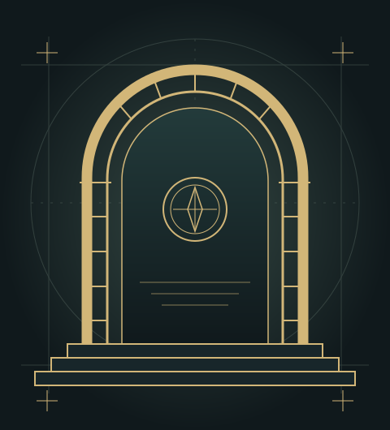

History, opened a little further
Short stories.
Long history.
The Ancient Vault explores ancient civilizations, overlooked history and forgotten mysteries through carefully researched short films.
This is the information site for The Ancient Vault Publisher, the channel owner’s publishing tool.
Watch The Ancient Vault
An invitation to look closer.
Inside the vault
Evidence before intrigue.
History is compelling without invented secrets. Stories distinguish what survives in the record, what scholars interpret and what remains unknown.
- Ancient civilizationsThe objects, places and ideas that reveal how people lived.
- Untold historyOverlooked details placed in their historical context.
- Forgotten mysteriesOpen questions explored with sources and clear uncertainty.
About the app
A publishing tool for one channel.
The Ancient Vault Publisher is operated by Puneet Deshwani for The Ancient Vault. It helps prepare narration and original visuals, check completed videos and upload approved Shorts to the owner’s YouTube channel.
The owner authorizes the uploader through Google. YouTube API access is used to identify the channel, upload videos, schedule publication and check processing or visibility. Records of completed uploads help prevent duplicate posts.
The tool is intended for the channel owner. This public website provides app information, support details and the policies linked from the Google consent screen.